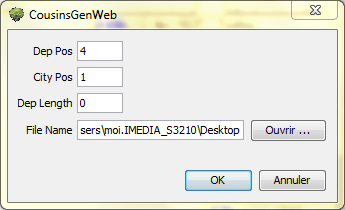

Vous trouverez CousinsGenWeb à www.francegenweb.org
Le site est organisé par département, il vous demande de transmettre vos données sous la forme :
PATRONYME ; commune
C'est exactement ce que va vous préparer Exports - CousinsGenWeb.
Exports - CousinsGenWeb va parcourir votre fichier.ged à la recherche des INDIvidus,
il retient les patronymes associés aux communes et départements.
Choisissez votre gedcom en ouvrant par exemple l'arbre dynamique.
Vous trouverez Exports - CousinsGenWeb dans le menu Fichier/Exporter/ConsinsGenweb.
Vous arriverez alors sur cet écran :

Dep Pos : lire Rang du Département.
City Pos : lire Rang de la Commune.
Dans les premières lignes de mon fichier.ged, on trouve :
1 PLAC
2 FORM Lieudit,Commune,Code_INSEE,Code_Postal,Département,Région,Pays
J'y vois que le Département occupe le rang 4 (on commence à 0) et la Commune le 1.
d'où les 2 première lignes du menu.
Dep Length : lire Longueur du Nom du Département.
Le 0 de la 3ème ligne indique que je veux le nom complet de chaque département,
en y mettant 5 j'aurais eu les 5 premières lettres de ce nom.
Ex avec 0 : Maine-et-Loire.csv et avec 5 : Maine.csv .
File Name : Lire Nom du Dossier (Répertoire)
Enfin à la 4ème ligne je choisis le dossier(ou répertoire)
où je veux récupérer la production de Exports - CousinsGenWeb,
ce choix se fait en passant par le bouton Ouvrir....
On arrive sur votre traditionnel gestionnaire de fichiers
La validation du choix du dossier lance la production de Exports - CousinsGenWeb.
Cette production est constituée de fichiers genre Maine-et-Loire.csv,
un par département représenté dans le gedcom.
Ce fichier contient la liste sous la forme
BARBAULT ; Angers
de tous les noms classés par commune, sans doublon.
Un exemple est visible sur la Page précédente.
C'est un fichier texte il s'ouvre avec gedit ou bloc-note et est prêt à être utilisé par copier/coller sur www.francegenweb.org